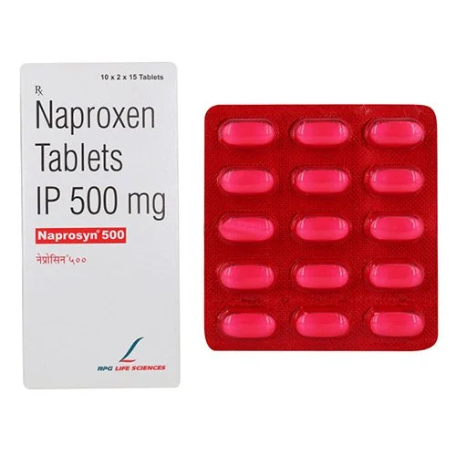

A fever is a common sign of illness, but that's not necessarily a bad thing. In fact, fevers seem to play a key role in fighting infections. So should you treat a fever or let the fever run its course? Here's help making the call.
These recommendations are for people who are generally healthy — for instance, those who are not immunocompromised or taking chemotherapy drugs and haven't recently had surgery.

For reducing fever medicines like "Ibuprofin" and "Naproxen" or "Aspirin" can be useful for
relief from fever.But along with that all medicines should be used only after it's side-effect.Every
medicine has it's own side effects so one should be aware of that.
If your fever is more than 103°F(39.4°C) or high fever you should visit the doctor as fast as possible.